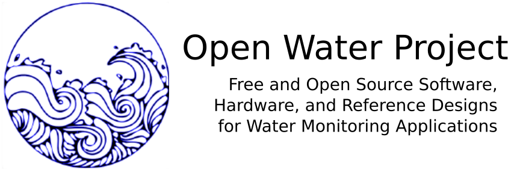

The Open Water Project aims to curate and develop novel water monitoring technologies and social systems that exemplify five main ideas:
Datalogger designs. Recording water parameter data over time is useful in a variety of contexts; open source hardware for accomplishing this is increasingly available, and is becoming more reliable. We'd like to faciliate and curate examples of accessible, open source datalogging hardware. Some examples include:
Sensor designs. Identifying and developing accessible technologies for sensing various water parameters. As examples, see some references designs we have collected below:
Enclosures. Accessible ways of reliably deploying water monitors in the field. Various enclosures have been considered and tested. For more on this topic, see the "Enclosures" section of the Riffle Design Philosophy wiki, as well as some relevant tags on Public Lab.org as well as relevant discussions occurring on the EnviroDIY forums.
Calibration. Monitoring devices require calibration; some calibration materials and techniques are more accessible than others in terms of cost and complexity. We're looking to develop DIY calibration methods for various common water parameters. Some examples:
Development of the Open Water Project and the Riffle_328 design have been supported through Public Lab's Open Water Initiative, by Propeller, and by the 11th Hour Project.